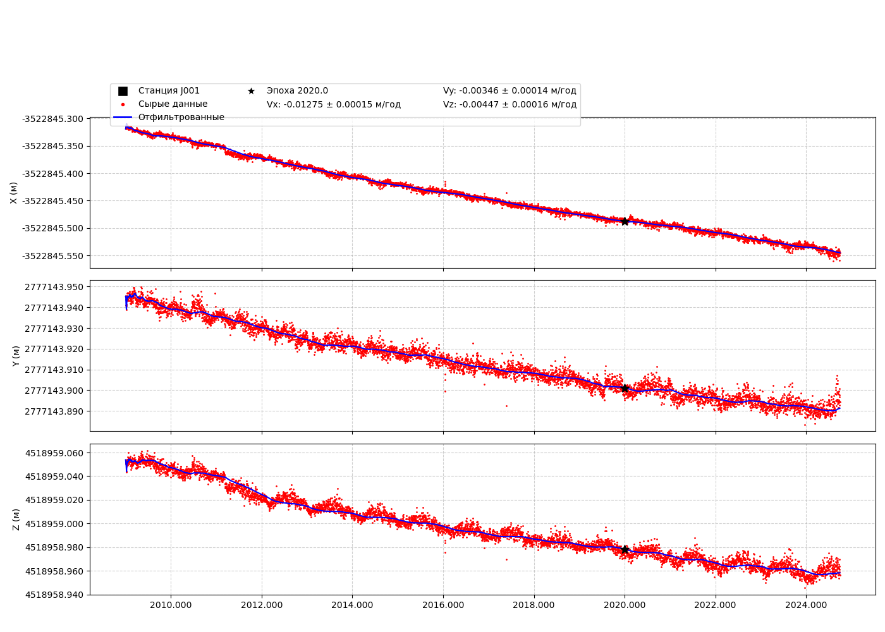

📍 Станция J001
Координаты (на эпоху 2020.0)
Широта: 45.403°
Долгота: 141.750°
Высота: 49.415 м
X_2020: -3519252.704
Y_2020: 2849161.439
Z_2020: 4679883.579
Файл txyz2
Скачать J001.txyz2
Графики координат XYZ

Интерактивный график координат
🔎 Открыть интерактивный график